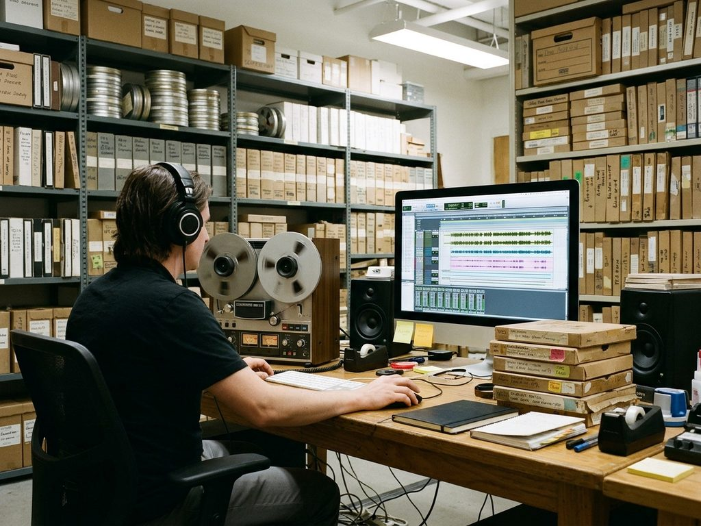

Sound collection digitized

The digitization of the Archives' sound collection has been completed: the field recordings made between 1962 and 1989 by the ethnomusicologist Aigul Choro kyzy, and copies of the wax cylinders of the 1928 Sadovnikov expedition.
Listening copies are available in the reading room on a reader's ticket. Copies for broadcast or publication are made only with the written permission of the Archives.
Press service of the State Archives of Irad